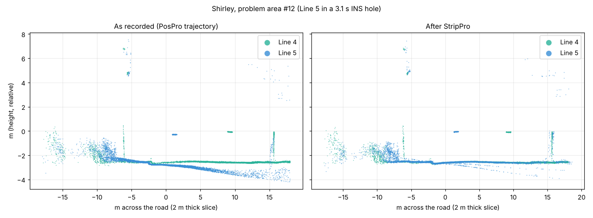
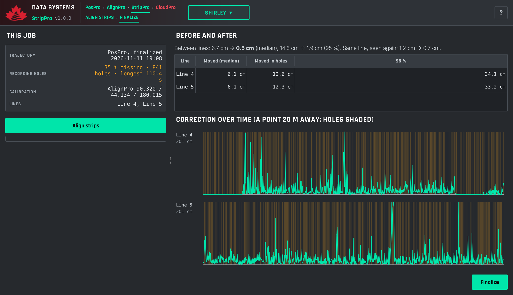
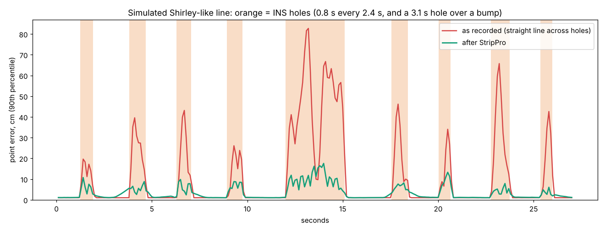

StripPro corrects the trajectory with the Lidar itself. It is the optional stage between AlignPro and CloudPro: it reads the trajectory PosPro finalized, the calibration AlignPro finalized and the survey lines, and finalizes a corrected trajectory that CloudPro georeferences with instead of PosPro's.
It does two things at once:
The correction belongs to the trajectory, not to the points: one shift and one small rotation of the vehicle per line, changing over time. It is pinned where the trajectory had data, free inside holes and smooth everywhere. Every point the Lidar recorded then follows from the corrected trajectory, also the ones StripPro did not look at.

Processing/<Name>/02_StripPro/out/.
| Part | What it shows |
|---|---|
| Header | The chain (PosPro › AlignPro › StripPro › CloudPro) and StripPro's two steps, Align strips and Finalize, coloured by state. Click a step to do it. |
| This job | The trajectory used (PosPro's, when it was finalized), its recording holes (share of the time with no data, number, longest), the calibration and the lines. |
| Before and after | How far overlapping lines sit apart before and after (median and 95 %), between lines and within a line where it saw a surface twice; per line how far the correction moved its points (median, inside holes, 95 %). |
| Correction over time | Per line, how far the correction moves a point 20 m from the vehicle, over the line's time; the holes are shaded. The large corrections should sit in the holes. |
In every 1 m cube, the points of one line within half a second get a plane when they lie on one (ground, walls, roofs). The points of the same line seen again up to 20 s later (a tilted scanner sees a wall ahead and again behind) and the points of other lines are compared with that plane, each at its own firing time. The correction per line is linear between knots: every 0.2 s inside holes, every second elsewhere, with a knot on each hole edge so it never spills into good data. Priors keep it within 1 cm and 0.005° where the trajectory had data and allow up to about a metre and 3° inside holes; a smoothness prior keeps it physical. Six Gauss–Newton iterations with refitted planes and robust weights.

| Separation (cm) | Before | After |
|---|---|---|
| Line 4 / Line 5, median | 6.7 | 0.5 |
| Line 4 / Line 5, 95 % | 14.6 | 1.9 |
| Same line seen again, median | 1.2 | 0.7 |
The 3.7 cm height difference between the two passes (GNSS between the two times) is shared out: +1.8 cm on Line 4, −1.8 cm on Line 5, so the average stays where the GNSS put it.
02_StripPro/out/trajectory.json is a dcs.trajectory/1 handover like PosPro's, with trajectory_sbet.out and trajectory_smrmsg.out, the same time, frame, lever arms and quality fields, and a strip section: the PosPro trajectory and AlignPro calibration it was made from, how many records were filled into holes, the before and after. Its recording_holes are the holes left (outside the lines, where the vehicle was standing).
CloudPro uses StripPro's trajectory while it is current. When PosPro or AlignPro finalize again, StripPro is out of date and CloudPro goes back to PosPro's trajectory until StripPro runs again.
| Question | Answer |
|---|---|
| Do I need StripPro on every job? | No. On a job without recording holes and with lines that already agree, it changes little. It is for jobs with holes, or lines that disagree locally. |
| Does it replace AlignPro? | No. AlignPro finds the Lidar's mounting, one value for the system; StripPro corrects the trajectory, which changes over time. Calibrate first, then align the strips. |
| Does it replace Trajectory Review in PosPro? | For holes and short trajectory errors that the point cloud shows, yes: you do not need to bridge or interpolate them by hand. |
| A single line? | Works for holes (the line's own surfaces seen twice); with nothing to compare it against, the alignment between lines does nothing. |